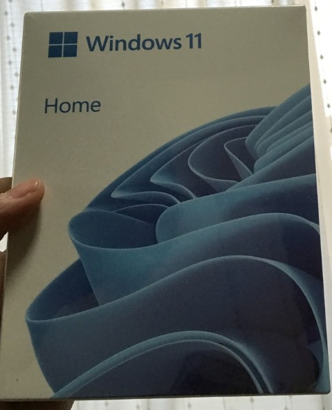
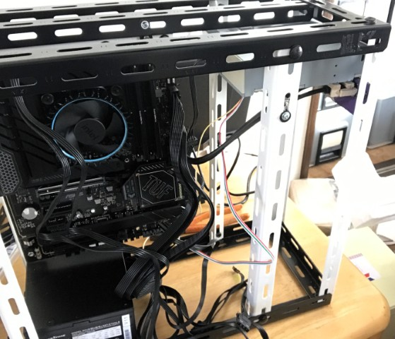
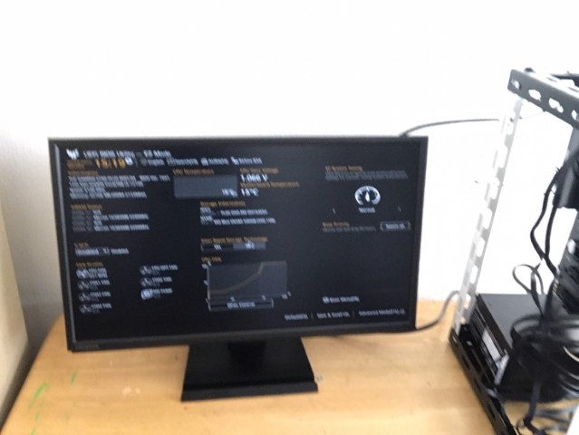
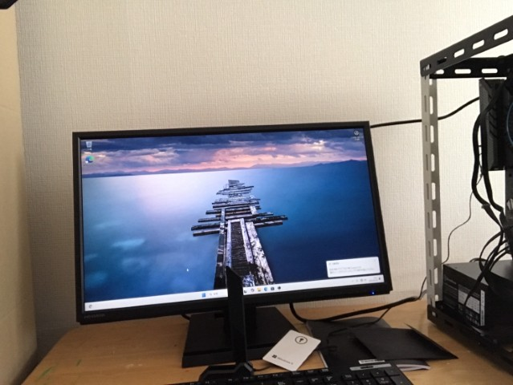
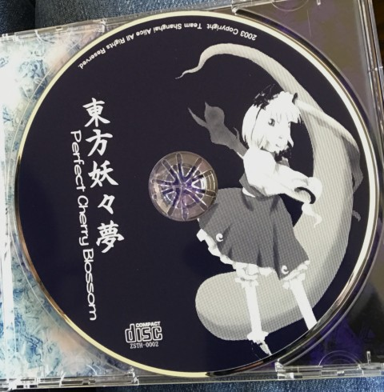
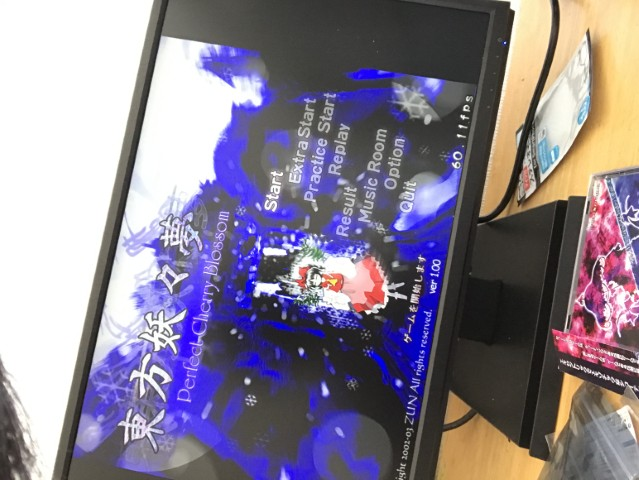

PC自作録 7.最終組み立て
前回はこちら
遂に組み立て
なんだかんだで自作PCも一区切り。ちゃんと動くか不安だったり。
燃えなければヨシとする。

用意するもの-使用パーツ
CPU
CPUはi3-12100を使用。後ほどハイエンドに換装する。
クーラーも付属のものを使用する。
価格：18780円
マザーボード
マザーボードはTUF-GAMING Z790 Plus wifi D4。LGA1700の最上位チップセットでOCが可能(なおi3はOCに対応していないので関係ないが)
価格：25000円
メモリ
crucialのDDR4 3200MHz 32GB(16Gb×2)。ヒートシンクがシンプルな黒いものなので、黒いマザーボードに結構マッチしてくれてる。
価格：8480円
OS用ストレージ
WDBlueのSN580 500GBを使用。PCIe4.0のM.2 SSDである。
必要最低限。
価格：7150円
データ用ストレージ
WDBlueのWD20EARZを使用。2TBのSATA HDDである。
とりあえず安心感のあるWD製のやつ。
価格：11000円
ケース
前回自作したやつ。側面に透明塩ビ板を取り付けられるようにした。
フロントパネルのスイッチ・LED・USBポートも価格に反映済み
大体の価格：15000円
ケースファン
オウルテックのOWL-FL1425M-BKを使用。4ピンコネクタの14センチファンである。
ファンの取り付けのテスト用なので全体の価格には反映しない。
価格：1300円
OS
windows11 home。説明不要
価格：17500円
ケースファン以外は以前紹介したのでとりあえずそれぞれのパーツの説明は省略。
今回かかった費用は総額102910円。
ここからグラボを搭載したりCPUをアップグレードすると20万円以上かかりそう。
組み立てた
組み立て途中の写真を撮ってないせいでかなり分かりづらい。
マザーボードの自作取り付けマウントが電源ユニットに干渉したのでちょっと削った。
それ以外は特に何のトラブルもなく組み立て完了。

写真が全然無いせいで非常にわかりづらいなこれ。
起動
遂に起動である。なんのトラブルもなく起動してくれた。

BIOS画面でCPUとかメモリのチェックを軽くしてみる。
気が済んだらwindows11をインストールしていく。

LANのドライバがあたっていないせいでネットワーク接続をすっ飛ばすコマンドを使用したが、起動後にドライバを入れたら無事に認識してくれた。
当然だがライセンスも通っている。現時点で起動に要する時間は5秒くらい。早い。
東方原作を遊ぶ
Amazonで1800円くらいで売ってた東方妖々夢。
早速インストールした。

ちなみにアキバホビーが販売してる新品の妖々夢。いいね

無事起動。ちなみにDirectX 8 か DirectX ランタイムが無いと動かないと思われる(デフォルトのwindowsには入ってない)ので各自無料で公式ページからダウンロードすることになる。
目標を達成したので遊ぶだけである。